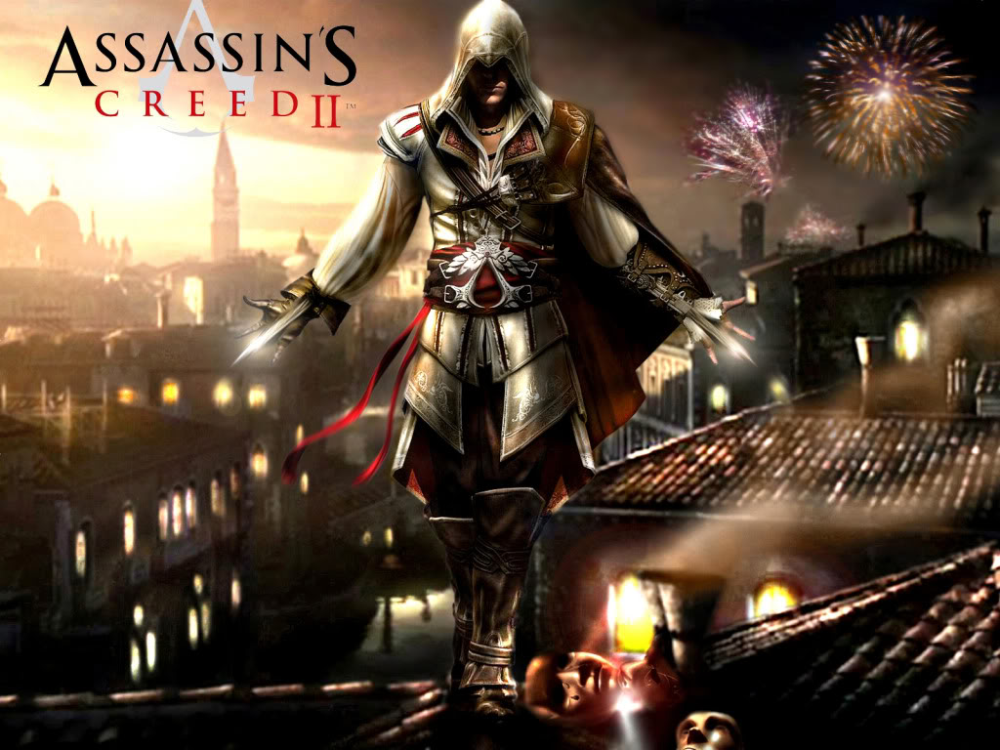

A maior parte dos jogos se passa dentro do Animus, onde a interface do dispositivo exibe a saúde, progresso, momento na história de seu ancestral, equipamentos e objetivos do jogador. Durante o uso do Animus, o jogador deve manter o nível de sincronização com seu ancestral, evitando fazer uso de ações que diminuem esse nível, como levar dano, matar pessoas inocentes e acessar áreas não disponíveis no momento. Os objetivos do jogo geralmente consistem em assassinar algum alvo, infiltrar-se em locais proibidos ou resgatar algum artefato perdido. O jogador conta com vários recursos para realizar os assassinatos, como uma grande habilidade de parkour, podendo escalar quase qualquer construção e um vasto arsenal, sendo a principal arma a lâmina oculta, um dispositivo escondido no braço que saca uma lâmina e sutilmente assassina o inimigo. Mas, o jogo conta também com outras armas brancas e de fogo, além das habilidades de arremessar facas e fazer uso de bombas. Mesmo com várias armas à disposição do jogador, o jogo encoraja o uso dos modos mais sutis possíveis para assassinar os alvos, para que não chame muita atenção e evite que os guardas da cidade comecem a caçá-lo. Para isso o jogo usa o conceito de movimentos passivos, que são sutis e discretos, e movimentos ativos como correr pelas ruas, escalar construções e correr pelos telhados das casas, que permitem velocidade, mas, chamam muita atenção. Duas habilidades chave à disposição do jogador são o Salto de Fé, pelo qual o personagem pula (praticamente se jogando) de lugares muito altos para se descer normalmente, caindo em lugares que amortecem a queda, tais como carroças de feno ,montes de folhas e na água, a Visão Aquilina, que permite ao jogador distinguir aliados dos inimigos e alvos, por meio do uso de cores, além de haver detalhes que só podem ser vistos por meio desta habilidade. Ao longo do jogo, também tem a ajuda de várias facções que pode ser usada, como outros assassinos, além de cortesãs, ladrões, mercenários e ciganas. Por fim, o jogador deve libertar as cidades da influência dos templários, queimando estruturas que representam a dominação dos templários na região e reconstruindo a parte dominada, restaurando construções como ferrarias, alfaiatarias e pontos turísticos. No sexto jogo principal da série, Edward pode fazer uma exploração submarina..
Assassin's Creed é uma série de videogame. A premissa central envolve-se a partir da rivalidade entre duas sociedades secretas ancestrais: os Assassinos que desejam a paz através do livre arbítrio e os Templários, que têm o objetivo de dominar o mundo . Ambos tiveram uma relação indireta com uma espécie que viveu antes dos humanos, cuja sociedade foi destruída por uma gigantesca tempestade solar. Misturando personagens e ficção histórica com eventos e figuras reais, a ordem cronológica dos jogos começa em 2012, e fala de Desmond Miles, um jovem que com a ajuda do Animus (uma máquina que permite ver as suas "memórias ancestrais"), explora as memórias de alguns dos mais proeminentes Assassinos da história. Retirando inspiração a partir do romance Alamut, do escritor esloveno Vladimir Bartol,[1] Assassin's Creed começou como um spin-off da série Prince of Persia. O jogo original foi um esboço para Prince of Persia: The Two Thrones, antes da equipa decidir fazer uma nova propriedade intelectual, incluindo também um cenário no Médio Oriente, baseado no culto histórico de Assassinos Islâmicos activos durante as Cruzadas.[2] A série começou em 2007 com o lançamento de Assassin's Creed e os jogos já foram lançados para várias plataformas incluindo PlayStation 3, PlayStation 4, Xbox 360, Xbox One, Microsoft Windows, Mac OS X, Nintendo DS, PlayStation Portable, PlayStation Vita, iOS, HP webOS,[3] Android, Nokia, Symbian, Windows Phone e Wii U. Os jogos principais foram na sua maior parte produzidos pelo estúdio Ubisoft Montreal com a colaboração do Ubisoft Annecy para o multijogador. Os portáteis já foram produzidos pela Gameloft e Gryptonite Studios com trabalho adicional do Ubisoft Montreal. A série Assassin's Creed, particularmente os jogos principais, receberam análises muito positivas tanto da critica especializada como do público. Muitos já chamaram a Assassin's Creed "...a série que se destaca na [sétima geração] de consoles". Em setembro de 2016 já tinham sido vendidas mais de 100 milhões de cópias de jogos Assassin's Creed, tornando-se a série mais vendida da Ubisoft e uma das series de videojogos mais vendidas de sempre. Para além dos jogos já foi adaptada para os mais variados média como livros, banda desenhada, roupa, brinquedos e um filme.

Referências: «Interview: Assassin's Creed». CVG. Consultado em 2 de setembro de 2012 «The Making Of: Assassin's Creed». EDGE. 27 de agosto de 2012. Consultado em 3 de março de 2013. Cópia arquivada em 23 de dezembro de 2013 «Assassin's Creed: Altair's Chronicles for Palm Pre». Gameloft. Consultado em 26 de dezembro de 2010 Karmali, Luke (28 de agosto de 2014). «Assassin's Creed Unity Release Date Delayed To November». IGN. Consultado em 28 de agosto de 2014 Futter, Mike (13 de outubro de 2014). «Assassin's Creed Rogue Coming To PC In 2015». Game Informer. GameStop. Consultado em 13 de outubro de 2014 http://jovemnerd.com.br/jovem-nerd-news/games/ubisoft-atrasa-o-lancamento-de-assassins-creed-unity http://jogos.uol.com.br/ultimas-noticias/2014/08/28/lancamento-de-assassins-creed-unity-e-adiado-para-11-de-novembro.htm http://omelete.uol.com.br/assassins-creed-unity/games/assassins-creed-unity-e-adiado-para-11-de-novembro/#.VATdYfldX_8 http://g1.globo.com/tecnologia/games/noticia/2014/08/assassins-creed-unity-atrasa-e-sera-lancado-em-11-de-novembro.html http://assassinscreed.ubi.com/pt-br/games/assassins-creed-unity.aspx Schreier, Jason (1 de dezembro de 2014). «Next Year's Big Assassin's Creed Is Set In Victorian London [UPDATE]». Kotaku. Consultado em 4 de dezembro de 2014 Jason Schreier (7 de maio de 2015). «Next Assassin's Creed To Be Announced Next Week; Now Called Syndicate». Kotaku. Consultado em 8 de maio de 2015 Louise Blain (12 de maio de 2015). «Who is Evie Frye? Meet Assassin's Creed Syndicate's female hero». GamesRadar+. Consultado em 13 de maio de 2015 Alexa Ray Corriea (12 de maio de 2015). «Everything We Know About Assassin's Creed Syndicate». GameSpot. Consultado em 13 de maio de 2015 Alexa Ray Corriea (12 de maio de 2015). «Assassin's Creed Syndicate Story, Characters, and Setting Breakdown». GameSpot. Consultado em 13 de maio de 2015 Gabe Gurwin, Steven Petite (13 de junho de 2017). «EVERYTHING WE KNOW ABOUT 'ASSASSIN'S CREED ORIGINS'». Digital Trends. Consultado em 14 de junho de 2017 Samit Sarkar (12 de junho de 2017). «New Assassin's Creed Origins trailer introduces ancient Egypt». Polygon. Consultado em 14 de junho de 2017 «Assassin's Creed Recollection for iPhone 3GS, iPhone 4, iPhone 4S, iPhone 5, iPod touch (2nd generation), iPod touch (3rd generation), iPod touch (4th generation), iPod touch (5th generation), and iPad on the iTunes App Store». itunes.apple.com. 18 de agosto de 2012. Consultado em 30 de novembro de 2012 «Assassin's Creed Rearmed for iPhone 3GS, iPhone 4, iPhone 4S, iPod touch (2nd generation), iPod touch (3rd generation), iPod touch (4th generation) and iPad on the iTunes App Store». Itunes.apple.com. 3 de maio de 2012. Consultado em 15 de agosto de 2012 «Sony announces white PS Vita bundle with Assassin's Creed III: Liberation». Engadget. Consultado em 15 de agosto de 2012 Lewis, Anne (24 de outubro de 2013). «ASSASSIN'S CREED LIBERATION HD – RELEASE DATE AND PRE-ORDER BONUSES». UbiBlog. Ubisoft. Consultado em 24 de outubro de 2013 Goldfarb, Andrew (25 de novembro de 2013). «Assassin's Creed Pirates Release Date, Price Announced». IGN. Consultado em 26 de novembro de 2013 Goldfarb, Andrew (10 de setembro de 2013). «Assassin's Creed Liberation HD, Pirates Announced». IGN. Consultado em 10 de setembro de 2013 Miller, Matt (21 de agosto de 2014). «Assassin's Creed Memories Launches On iOS». Game Informer. GameStop. Consultado em 22 de agosto de 2014 Marchiafavra, Jeff (22 de setembro de 2014). «Assassin's Creed Unity Season Pass Includes Newly Announced 2.5D Downloadable Title». Game Informer. GameStop. Consultado em 22 de setembro de 2014 Sinha, Robin (1 de outubro de 2014). «Ubisoft Unveils Assassin's Creed Identity for IPhone and IPad». NDTV Gadgets. NDTV Convergence Limited. Consultado em 16 de outubro de 2014 «Assassin's Creed: Renascença». Galera Record. Consultado em 2 de março de 2012 «Assassin's Creed: Irmandade». Galera Record. Consultado em 10 de março de 2012 Stephany Nunneley (18 de Julho de 2012). «Assassin's Creed: Forsaken – novel tells the story of AC3′s Connor» (em inglês). VG247. Consultado em 12 de Abril de 2013. Ubisoft has announced a novelization of Assassin’s Creed III will be released on December 4. Written by Oliver Bowden, the novel “Assassin’s Creed: Forsaken” will tell the origins of Connor [...]. [A Ubisoft anunciou que uma romanceação de Assassin’s Creed III será lançada em 4 de Dezembro. Escrito por Oliver Bowden, o romance “Assassin’s Creed: Forsaken” contará as origens de Connor [...].] Felipe Felizardo (11 de novembro de 2012). «Assassin's Creed: Renegado é livro que conta as origens do protagonista Connor Kenway» (em inglês). GameFM. Consultado em 26 de abril de 2013. A Livraria Saraiva já tem em seu estoque o mais novo lançamento da Editora Galera em parceria com a Ubisoft. “Assassin’s Creed: Renegado“, escrito por Oliver Bowden, conta as origens de Connor Kenway, o protagonista de origem indígena de “Assassin’s Creed III“. Osborn, Alex (28 de agosto de 2015). «ASSASSIN'S CREED MOVIE FEATURES SHARED UNIVERSE WITH GAMES». IGN. Consultado em 28 de agosto de 2015 Tom Phillips (6 de janeiro de 2015). «Assassin's Creed film now due Christmas 2016». Eurogamer. Consultado em 6 de janeiro de 2015 Graser, Marc (20 de outubro de 2011). «Sony breeds 'Creed'». Variety. Consultado em 10 de agosto de 2014 Wigler, Josh (9 de julho de 2012). «Michael Fassbender To Star In 'Assassin's Creed'». MTV. Consultado em 10 de agosto de 2014 Doty, Meriah (27 de agosto de 2015). «'Assassin's Creed' First Look: Here's Michael Fassbender as Brand New Character (Exclusive)». Yahoo. Consultado em 27 de agosto de 2015 Graser, Marc (22 de outubro de 2012). «New Regency, Fox partner on Ubisoft's 'Assassin's Creed'». Variety. Consultado em 10 de agosto de 2014 Siegel, Tatiana (14 de janeiro de 2013). «New Regency and Ubisoft Tap Brit Writer for 'Assassin's Creed' Film (Exclusive)». The Hollywood Reporter. Consultado em 10 de agosto de 2014 Vejvoda, Jim (16 de agosto de 2013). «Scott Frank Rewriting Assassin's Creed Movie». IGN. Consultado em 16 de agosto de 2013 Fleming Jr., Mike (7 de abril de 2014). «'Exodus' Scribes Adam Cooper & Bill Collage Take 'Assassin's Creed'». Deadline.com. Consultado em 7 de abril de 2014 Fleming, Jr., Mike (29 de abril de 2014). «Michael Fassbender Poised To Re-Team With 'Macbeth' Helmer On 'Assassin's Creed'». Deadline.com. Consultado em 29 de abril de 2014 Luís Alves (4 de outubro de 2015). «Jeremy Irons e Brendan Gleeson confirmados para o filme de Assassin's Creed». Eurogamer. Consultado em 5 de outubro de 2015 Moore, Rose (23 de março de 2017). «Assassin's Creed TV Show In Development». ScreenRant. Consultado em 23 de março de 2017 «ASSASSIN'S CREED ANIME ANNOUNCED BY CASTLEVANIA NETFLIX PRODUCER». IGN «Assassin's Creed: Director's Cut Edition Reviews». GameRankings. Consultado em 19 de junho de 2011 «Assassin's Creed Reviews». GameRankings. Consultado em 19 de junho de 2011 «Assassin's Creed Reviews». GameRankings. Consultado em 19 de junho de 2011 «Assassin's Creed: Director's Cut Edition Reviews». Metacritic. Consultado em 19 de junho de 2011 «Assassin's Creed Reviews». Metacritic. Consultado em 19 de junho de 2011 «Assassin's Creed Reviews». Metacritic. Consultado em 19 de junho de 2011 «Assassin's Creed: Altaïr's Chronicles Reviews». GameRankings. Consultado em 19 de junho de 2011 «Assassin's Creed: Altaïr's Chronicles Reviews». Metacritic. Consultado em 19 de junho de 2011 «Assassin's Creed: Bloodlines Reviews». GameRankings. Consultado em 19 de junho de 2011 «Assassin's Creed: Bloodlines Reviews». Metacritic. Consultado em 19 de junho de 2011 «Assassin's Creed II Reviews». GameRankings. Consultado em 19 de junho de 2011 «Assassin's Creed II Reviews». GameRankings. Consultado em 19 de junho de 2011 «Assassin's Creed II Reviews». GameRankings. Consultado em 19 de junho de 2011 «Assassin's Creed II Reviews». Metacritic. Consultado em 19 de junho de 2011 «Assassin's Creed II Reviews». Metacritic. Consultado em 19 de junho de 2011 «Assassin's Creed II Reviews». Metacritic. Consultado em 19 de junho de 2011 «Assassin's Creed II: Discovery Reviews». GameRankings. Consultado em 19 de junho de 2011 «Assassin's Creed II: Discovery Reviews». Metacritic. Consultado em 19 de junho de 2011 «Assassin's Creed: Brotherhood Reviews». GameRankings. Consultado em 19 de junho de 2011 «Assassin's Creed: Brotherhood Reviews». GameRankings. Consultado em 19 de junho de 2011 «Assassin's Creed: Brotherhood Reviews». GameRankings. Consultado em 19 de junho de 2011 «Assassin's Creed: Brotherhood Reviews». Metacritic. Consultado em 19 de junho de 2011 «Assassin's Creed: Brotherhood Reviews». Metacritic. Consultado em 19 de junho de 2011 «Assassin's Creed: Brotherhood Reviews». Metacritic. Consultado em 19 de junho de 2011 «Assassin's Creed: Revelations Reviews». GameRankings. Consultado em 19 de junho de 2011 «Assassin's Creed: Revelations Reviews». GameRankings. Consultado em 19 de junho de 2011 «Assassin's Creed: Revelations Reviews». GameRankings. Consultado em 19 de junho de 2011